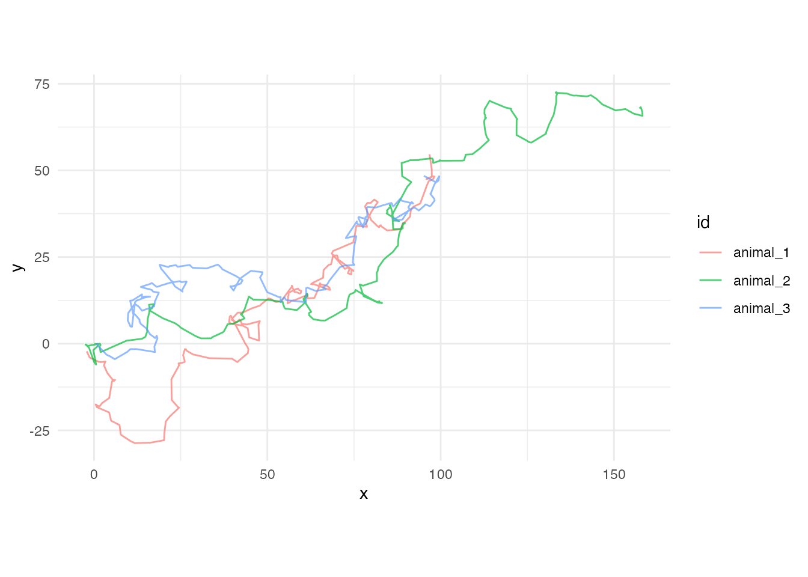
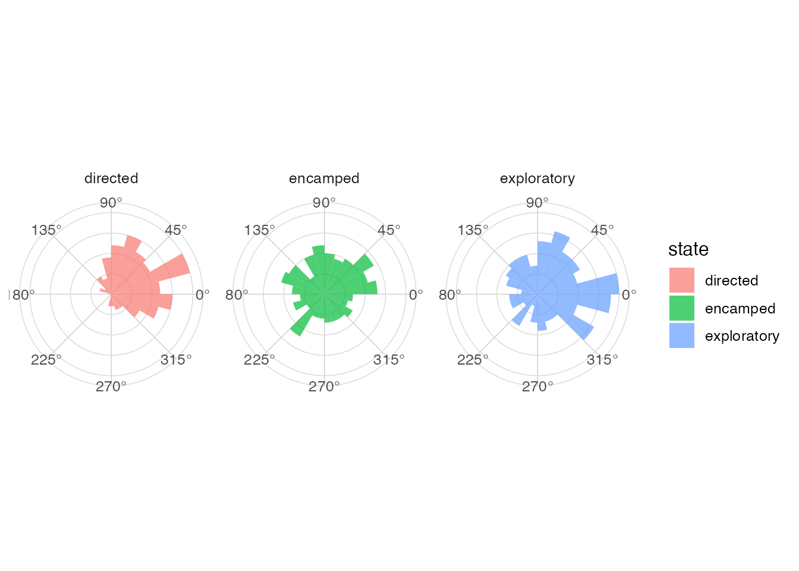
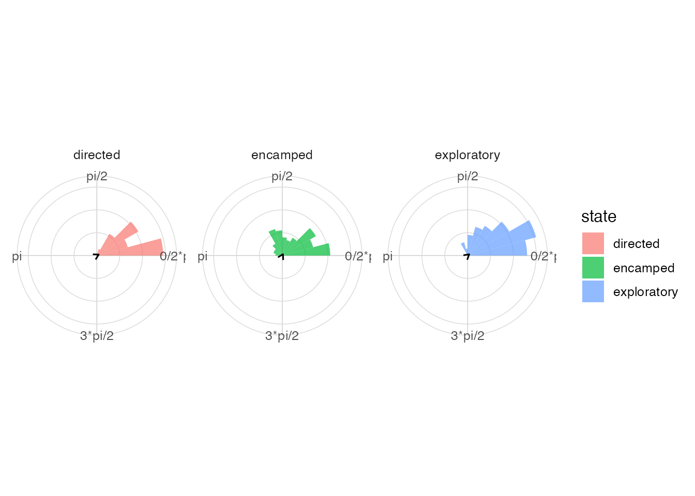

Visualizing Circular and Directional Data with ggcircular
Source:vignettes/article-demonstration.Rmd
article-demonstration.RmdAbstract
This demonstration presents a reproducible workflow for simulated
animal movement data. The aim is to show how rose diagrams, circular
density estimates and mean directions can be combined in a
ggplot2 grammar.
Introduction
Directional variables occur in wind, movement, orientation and time-of-day data. Their periodic nature requires summaries and graphics that respect the circle.
Circular data and specialized graphics
Circular graphics should keep the endpoints of the angular scale adjacent. They should also distinguish directionality, concentration and uncertainty.
The grammar of ggcircular
library(ggplot2)
#> Warning: package 'ggplot2' was built under R version 4.5.2
library(dplyr)
#> Warning: package 'dplyr' was built under R version 4.5.2
#>
#> Attaching package: 'dplyr'
#> The following objects are masked from 'package:stats':
#>
#> filter, lag
#> The following objects are masked from 'package:base':
#>
#> intersect, setdiff, setequal, union
library(ggcircular)Simulated trajectories
ggplot(animal_steps, aes(x = x, y = y, group = id, colour = id)) +
geom_path(alpha = 0.7) +
coord_equal() +
theme_minimal()
Directional features
movement_summary <- animal_steps |>
group_by(state) |>
summarise(
mean_step = mean(step_length, na.rm = TRUE),
median_step = median(step_length, na.rm = TRUE),
.groups = "drop"
)
movement_summary
#> # A tibble: 3 × 3
#> state mean_step median_step
#> <chr> <dbl> <dbl>
#> 1 directed 3.30 3.23
#> 2 encamped 0.471 0.382
#> 3 exploratory 1.35 1.20Bearings by state
ggplot(animal_steps, aes(x = bearing, fill = state)) +
geom_rose(bins = 24, alpha = 0.7) +
facet_wrap(~ state) +
scale_x_circular_degrees() +
coord_circular() +
theme_circular()
#> Warning: Removed 3 rows containing non-finite outside the scale range
#> (`stat_rose()`).
Turn angles by state
ggplot(animal_steps, aes(x = turn_angle, fill = state)) +
geom_rose(bins = 24, alpha = 0.7) +
geom_mean_direction() +
facet_wrap(~ state) +
scale_x_circular_radians() +
coord_circular() +
theme_circular()
#> Warning: Removed 280 rows containing non-finite outside the scale range
#> (`stat_rose()`).
#> Warning: Removed 280 rows containing non-finite outside the scale range
#> (`stat_mean_direction()`).
Mean directions and resultant length
animal_steps |>
group_by(state) |>
circular_summary(turn_angle)
#> # A tibble: 3 × 8
#> state n mean R Rbar variance sd kappa
#> <chr> <int> <dbl> <dbl> <dbl> <dbl> <dbl> <dbl>
#> 1 directed 153 0.0601 131. 0.856 0.144 0.558 3.78
#> 2 encamped 207 0.203 57.6 0.278 0.722 1.60 0.579
#> 3 exploratory 234 0.0822 159. 0.679 0.321 0.880 1.88Circular densities
ggplot(animal_steps, aes(x = turn_angle, colour = state)) +
geom_circular_density(linewidth = 1) +
scale_x_circular_radians() +
coord_circular() +
theme_circular()
#> Warning: Removed 280 rows containing non-finite outside the scale range
#> (`stat_circular_density()`).
Interpretation
In the simulated data, directed movement has longer steps and more concentrated turn angles. Encamped movement has shorter steps and more diffuse turning. Exploratory movement is intermediate. These statements describe the simulated dataset and should not be generalized beyond it.